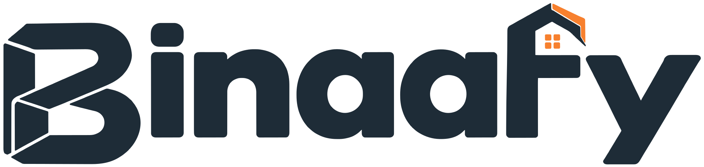

<!doctype html>
<html lang="sv">
<head>
<meta charset="utf-8">
<title>Idéer – skisser</title>
<!-- Skisser av idéerna i ../ideer.md. ?i=1…10 visar en idé i 1080×1350. Rendera med render-ideer.sh. -->
<link rel="stylesheet" href="https://fonts.googleapis.com/css2?family=Plus+Jakarta+Sans:wght@400;500;600;700&display=swap">
<style>
*{box-sizing:border-box;margin:0;padding:0}
html,body{background:#18232c}
body{width:1080px;height:1350px;overflow:hidden;font-family:'Plus Jakarta Sans',system-ui,sans-serif;color:#f5f2ed;-webkit-font-smoothing:antialiased}
em{font-style:normal;color:#f7802e}
s{text-decoration:line-through;text-decoration-color:#f7802e;text-decoration-thickness:.09em;color:#a9b3bd}
.page{position:relative;width:1080px;height:1350px;display:flex;flex-direction:column;padding:64px 70px 56px;
  background-image:linear-gradient(rgba(245,242,237,.04) 2px,transparent 2px),linear-gradient(90deg,rgba(245,242,237,.04) 2px,transparent 2px);background-size:72px 72px}
.top{display:flex;justify-content:space-between;align-items:center;font-size:22px;font-weight:600;letter-spacing:.22em;text-transform:uppercase;color:#a9b3bd}
.top b{color:#f7802e}
.title{font-size:66px;font-weight:700;letter-spacing:-.035em;line-height:1.04;margin-top:26px}
.stage{position:relative;flex:1;margin:44px 0 36px;min-height:0}
.why{border-top:2px solid rgba(245,242,237,.14);padding-top:28px;font-size:28px;line-height:1.45;color:#cfd5da}
.why b{color:#f5f2ed}
.ex{position:absolute;z-index:5;right:0;top:0;font-size:18px;font-weight:600;letter-spacing:.14em;text-transform:uppercase;background:rgba(245,242,237,.12);color:#cfd5da;padding:8px 14px}

/* telefon */
.ph{position:absolute;width:300px;height:620px;border:12px solid #0b1116;border-radius:48px;overflow:hidden;background:#0b1116;box-shadow:0 26px 70px rgba(0,0,0,.5)}
.ph .sc{position:absolute;inset:0;border-radius:36px;overflow:hidden}
.ph .sc>img{width:100%;height:100%;object-fit:cover;object-position:50% 0;display:block}
.ph .notch{position:absolute;z-index:3;left:50%;top:10px;width:90px;height:26px;margin-left:-45px;border-radius:13px;background:#0b1116}
.cover{position:absolute;inset:0;width:100%;height:100%;object-fit:cover;display:block}
.sticker{position:absolute;background:#fff;color:#18232c;border-radius:18px;padding:16px 18px;font-weight:700;box-shadow:0 10px 30px rgba(0,0,0,.35)}
.bar{height:10px;border-radius:5px;background:rgba(245,242,237,.15);overflow:hidden}.bar i{display:block;height:100%;background:#f7802e}

/* 1 hus */
.map{display:grid;grid-template-columns:1fr 70px 1fr;row-gap:16px;align-items:center}
.map .h,.map .w{padding:22px 26px;font-size:30px;font-weight:700;border:2px solid rgba(245,242,237,.16);background:rgba(245,242,237,.04)}
.map .h small,.map .w small{display:block;font-size:20px;font-weight:500;color:#a9b3bd;margin-top:4px}
.map .w{border-color:#f7802e}
.map .ar{text-align:center;color:#f7802e;font-size:40px;font-weight:700}
.map .hd{font-size:20px;font-weight:600;letter-spacing:.2em;text-transform:uppercase;color:#a9b3bd}

/* 3 rutnät */
.grid9{position:absolute;left:50%;top:0;margin-left:-300px;width:600px;display:grid;grid-template-columns:repeat(3,1fr);gap:5px;background:#0b1116;padding:5px;border-radius:8px}
.grid9 div{aspect-ratio:3/4;background-image:url(../../../postverktyg/bilder/sajt-kop-hemsida-rutnat.png);background-size:300% 300%;background-repeat:no-repeat;background-color:#18232c}

/* 6 storys */
.st{position:absolute;top:0;width:290px;height:600px;border-radius:30px;overflow:hidden;background:#1e2c37;border:2px solid rgba(245,242,237,.12)}
.st .q{position:absolute;left:22px;right:22px;top:150px;background:#fff;color:#18232c;border-radius:20px;padding:22px;text-align:center;font-size:24px;font-weight:700;line-height:1.25}
.st .opt{display:flex;gap:10px;margin-top:16px}.st .opt span{flex:1;border:2px solid #e3e6ea;border-radius:12px;padding:10px 0;font-size:22px}
.st .opt span.on{background:#f7802e;border-color:#f7802e;color:#18232c}
.st .sl{margin-top:22px;height:12px;border-radius:6px;background:linear-gradient(90deg,#f7802e 62%,#e3e6ea 62%);position:relative}
.st .sl:after{content:"💸";position:absolute;left:58%;top:-20px;font-size:40px}
.st .n{position:absolute;left:22px;top:24px;font-size:18px;font-weight:600;letter-spacing:.16em;color:#a9b3bd}

/* 7 skylt */
.sign{position:absolute;left:50%;top:10px;margin-left:-330px;width:660px;background:#f5f2ed;color:#18232c;padding:44px 46px;border-bottom:16px solid #f7802e;box-shadow:0 26px 70px rgba(0,0,0,.5)}
.sign .k{font-size:22px;font-weight:600;letter-spacing:.2em;text-transform:uppercase;color:#5e6a76}
.sign .t{font-size:52px;font-weight:700;letter-spacing:-.03em;line-height:1.05;margin-top:12px}
.sign .t em{color:#b8560f}
.sign .row{display:flex;align-items:center;gap:30px;margin-top:30px}
.sign .row img.qr{width:190px;height:190px}
.sign .row p{font-size:26px;line-height:1.4;color:#4b5763}
.post{position:absolute;left:50%;width:24px;margin-left:-12px;top:520px;bottom:0;background:#5e6a76}

/* 8 tidslinje */
.tl{display:grid;grid-template-columns:repeat(4,1fr);gap:16px}
.tl div{position:relative;height:430px;border-radius:24px;overflow:hidden;background:#1e2c37;border:2px solid rgba(245,242,237,.12)}
.tl b{position:absolute;left:18px;top:18px;background:#f7802e;color:#18232c;font-size:24px;padding:6px 12px;border-radius:8px}
.tl span{position:absolute;left:18px;right:18px;bottom:20px;font-size:24px;font-weight:700;line-height:1.2}
.tl img{position:absolute;inset:0;width:100%;height:100%;object-fit:cover;object-position:50% 0;opacity:.55}
.count{margin:30px auto 0;width:max-content;background:#fff;color:#18232c;border-radius:20px;padding:18px 34px;text-align:center}
.count small{display:block;font-size:18px;font-weight:600;letter-spacing:.16em;color:#5e6a76}
.count b{font-size:64px;letter-spacing:.04em}

/* 9 mätare */
.gauges{display:flex;justify-content:center;align-items:center;gap:50px;height:100%}
.g{text-align:center}
.g .ring{width:300px;height:300px;border-radius:50%;display:grid;place-items:center;font-size:110px;font-weight:700}
.g .ring>span{width:250px;height:250px;border-radius:50%;background:#18232c;display:grid;place-items:center}
.g p{margin-top:22px;font-size:26px;font-weight:600;color:#a9b3bd}
.g p b{display:block;color:#f5f2ed;font-size:32px}
.g-arrow{font-size:80px;color:#f7802e;font-weight:700}
</style>
</head>
<body>
<div class="page" id="p"></div>
<script>
const K = "../../_kalla/bilder/", P = "../../../postverktyg/bilder/", LOGO = "../../../../public/brand/binaafy-light.svg";
const phone = (src, style, extra = "") => `<div class="ph" style="${style}"><div class="sc">${extra}</div><div class="notch"></div></div>`;
const IDEAS = [
  { t: "Vi bygger hemsidor <em>som hus.</em>", kind: "Karusell", why: "<b>Bara ni kan säga det trovärdigt</b>, eftersom ni bygger båda. Byggtermerna gör tekniken begriplig för en villaägare eller hantverkare.",
    stage: `<div class="map"><div class="hd">Huset</div><div></div><div class="hd">Hemsidan</div>${[["Grunden", "det allt står på", "Hosting och domän", "snabb, säker, i ert namn"], ["Stommen", "det som bär", "Koden", "byggd för att hålla"], ["Fasaden", "det man ser", "Designen", "er logga och era färger"], ["Elen", "det som gör saker", "Formulär och fakturering", "förfrågningar blir pengar"], ["Besiktningen", "kvittot på kvaliteten", "Google och hastighet", "syns och laddar snabbt"]]
      .map(([a, b, c, d]) => `<div class="h">${a}<small>${b}</small></div><div class="ar">→</div><div class="w">${c}<small>${d}</small></div>`).join("")}</div>` },
  { t: "Gratis hemsidegranskning <em>på 60 sekunder.</em>", kind: "Reels + kommentarer", why: "<b>Folk vill bli granskade.</b> De kommenterar sin adress, ni spelar in skärmen och varje granskad sida blir ett varmt säljsamtal.",
    stage: `<span class="ex">Exempel</span>${phone(P + "sajt-start-mobil.png", "left:40px;top:0", `<div style="position:absolute;inset:0;background:rgba(11,17,22,.55)"></div>
      <div class="sticker" style="left:16px;right:16px;top:80px;font-size:22px;line-height:1.7">📱 Mobil: 4,1 s <span style="color:#c0392b">✕</span><br>🔎 Google: syns inte <span style="color:#c0392b">✕</span><br>☎️ Knapp: finns <span style="color:#1e8e3e">✓</span></div>
      <div style="position:absolute;left:16px;right:16px;bottom:26px;font-size:21px;font-weight:700;line-height:1.3">Granskning #12: <em>frisören på hörnet</em></div>`)}
      <div style="position:absolute;left:400px;top:60px;right:0">${[["@cafe.linne", "kolla vår! cafelinne.se 🙏"], ["@bygg.persson", "gör min också"], ["@studio.ek", "studioek.se – är den för långsam?"]].map(([u, c]) =>
        `<div style="display:flex;gap:18px;margin-bottom:30px"><div style="width:62px;height:62px;border-radius:50%;background:#2c3d4a;flex:none"></div><div style="font-size:26px;line-height:1.35"><b>${u}</b><br><span style="color:#cfd5da">${c}</span></div></div>`).join("")}
        <div style="margin-top:20px;font-size:26px;color:#a9b3bd">Påhittade kommentarer, för att visa idén.</div></div>` },
  { t: "En hemsida <em>i nio rutor.</em>", kind: "Rutnätspussel", why: "<b>Som den delade loggan, fast större.</b> Nio inlägg bildar tillsammans en sida ni byggt. Följarna ser pusslet växa, och sista rutan avslöjar: \"Hela sidan tog två veckor.\"",
    stage: `<div class="grid9">${Array.from({ length: 9 }, (_, i) => `<div style="background-position:${(i % 3) * 50}% ${Math.floor(i / 3) * 50}%"></div>`).join("")}</div>` },
  { t: "Samma team. <em>Två sorters bygge.</em>", kind: "Reels, delad skärm", why: "<b>Visar på fem sekunder vad Binaafy är.</b> Taket till vänster och koden till höger, samma klipp och samma låt. Lätt att filma en vanlig måndag.",
    stage: `<div style="position:absolute;inset:0;display:grid;grid-template-columns:1fr 1fr;gap:8px;border-radius:24px;overflow:hidden">
      <div style="position:relative;overflow:hidden"><div style="position:absolute;left:24px;bottom:24px;background:#f5f2ed;color:#18232c;font-weight:700;font-size:28px;padding:10px 18px">Kl 07:00 · taket</div></div>
      <div style="position:relative;overflow:hidden"><div style="position:absolute;left:24px;bottom:24px;background:#f7802e;color:#18232c;font-weight:700;font-size:28px;padding:10px 18px">Kl 07:00 · koden</div></div></div>` },
  { t: "Följ ditt bygge <em>i realtid.</em>", kind: "Reels, kundportalen", why: "<b>Säljer båda sidorna samtidigt.</b> Byggkunden ser trygghet: tidplan, foton och ändringar att godkänna. Företagaren ser att ni kan bygga riktiga system.",
    stage: `<span class="ex">Exempel</span>
      <div class="ph" style="left:50%;margin-left:-150px;top:20px;background:#f5f2ed"><div class="sc" style="background:#f5f2ed;color:#1e2c37;padding:56px 20px 20px">
        <div style="font-size:14px;font-weight:600;letter-spacing:.16em;color:#5e6a76">MITT PROJEKT</div><div style="font-size:24px;font-weight:700;margin:4px 0 12px">Takbyte</div>
        <div class="bar" style="background:#e3ded5"><i style="width:55%"></i></div><div style="font-size:15px;color:#5e6a76;margin:8px 0 16px">Dag 6 av 11 · enligt tidplan</div>
        <div style="font-size:14px;font-weight:600;letter-spacing:.16em;color:#5e6a76">NYA FOTON I DAG</div>
        <div style="display:grid;grid-template-columns:1fr 1fr 1fr;gap:6px;margin:8px 0 16px">${["tak-fore-rotskadad", "tak-montor-nock", "tak-falsad-plat"].map((f) => ``).join("")}</div>
        <div style="border:2px solid #f7802e;border-radius:12px;padding:12px;font-size:16px"><b>Ändring väntar på ditt svar</b><br><span style="color:#5e6a76">Byte av två bräder · 1 800 kr</span><div style="margin-top:8px;background:#f7802e;color:#18232c;font-weight:700;text-align:center;padding:8px;border-radius:8px">Godkänn</div></div></div><div class="notch"></div></div>` },
  { t: "Vad kostar er <em>gamla lösning?</em>", kind: "Interaktiv story, tre steg", why: "<b>En säljkonversation som inte känns som försäljning.</b> Alla som svarar \"ja\" får ett DM med erbjudandet.",
    stage: `<div class="st" style="left:0"><span class="n">1 / 3</span><div class="q">Betalar ni för ett fakturaprogram?<div class="opt"><span class="on">Ja</span><span>Nej</span></div></div></div>
      <div class="st" style="left:325px"><span class="n">2 / 3</span><div class="q">Hur mycket i månaden?<div class="sl"></div></div></div>
      <div class="st" style="left:650px;background:#18232c"><span class="n">3 / 3</span><div style="position:absolute;left:24px;right:24px;top:140px;font-size:40px;font-weight:700;line-height:1.1;letter-spacing:-.02em">Med en hemsida från oss: <em>0 kr</em> första året.</div>
        <div style="position:absolute;left:24px;right:24px;top:360px;font-size:22px;color:#cfd5da"><s>490 kr/mån</s> · ingår när ni köper en hemsida</div>
        <div style="position:absolute;left:24px;right:24px;bottom:40px;background:#fff;color:#18232c;text-align:center;font-weight:700;font-size:22px;padding:14px;border-radius:14px">🔗 SE ERBJUDANDET</div></div>` },
  { t: "Snyggt tak? <em>Vi bygger hemsidor också.</em>", kind: "QR på byggskylten och bilen", why: "<b>Grannar och byggkunder är ofta själva företagare.</b> Skylten står ändå där. Den här korsförsäljningen från bygg till mjukvara kostar ingenting.",
    stage: `<div class="post"></div><div class="sign"><div class="k">Här bygger Binaafy</div><div class="t">Snyggt tak? <em>Vi bygger hemsidor också.</em></div>
      <div class="row"><p>Skanna för hemsida från 9 900 kr – och fakturering <b>gratis</b> första året.</p></div>
      </div>` },
  { t: "En hemsida <em>på 48 timmar.</em>", kind: "Storyserie, lokalt företag", why: "<b>Ger ett riktigt kundcase och lokal uppmärksamhet.</b> Ni bygger gratis åt ett café eller en frisör i Halmstad och visar varje steg. De taggar er, och deras följare ser det.",
    stage: `<div class="tl">${[["0 h", "Startmöte på caféet", ""], ["12 h", "Skiss på papper", ""], ["30 h", "Designen klar", P + "sajt-kop-hemsida-mobil.png"], ["48 h", "Live! 🎉", P + "sajt-start-mobil.png"]].map(([h, s, img]) =>
      `<div>${img ? `` : ""}<b>${h}</b><span>${s}</span></div>`).join("")}</div>
      <div class="count"><small>NEDRÄKNING</small><b>48:00:00</b></div>` },
  { t: "Samma företag. <em>Tre gånger snabbare.</em>", kind: "Före/efter för mjukvara", why: "<b>Före/efter-mallen, fast med siffror.</b> När en kund byter från en gammal sida visar ni Google PageSpeed före och efter. Kräver en riktig kund. Siffrorna här är bara exempel.",
    stage: `<span class="ex">Exempel</span><div class="gauges">
      <div class="g"><div class="ring" style="background:conic-gradient(#d64545 34%,rgba(245,242,237,.1) 0)"><span style="color:#d64545">34</span></div><p><b>Före</b>Gamla sidan · 6,2 s</p></div>
      <div class="g-arrow">→</div>
      <div class="g"><div class="ring" style="background:conic-gradient(#3fb36b 98%,rgba(245,242,237,.1) 0)"><span style="color:#3fb36b">98</span></div><p><b>Efter</b>Byggd av Binaafy · 0,9 s</p></div></div>` },
  { t: "Fråga en snickare <em>som kodar.</em>", kind: "Story varje fredag", why: "<b>Ger ansikten bakom loggan.</b> Följarna frågar om tak eller hemsidor, och svaren blir nästa veckas inlägg.",
    stage: `<div style="position:absolute;left:50%;margin-left:-190px;top:0;width:380px;height:100%;border-radius:30px;overflow:hidden">
      <div style="position:absolute;inset:0;background:linear-gradient(180deg,rgba(24,35,44,.1),rgba(24,35,44,.7))"></div>
      <div class="sticker" style="left:30px;right:30px;top:220px;text-align:center;padding:0;overflow:hidden"><div style="background:#f7802e;padding:18px;font-size:28px;line-height:1.2">Fråga en snickare som kodar 🔨💻</div><div style="padding:22px;font-size:22px;color:#a0a8b0;font-weight:500">Skriv något…</div></div>
      <div style="position:absolute;left:30px;right:30px;bottom:30px;font-size:24px;font-weight:700">Varje fredag · tak, plåt, hemsidor</div></div>` },
];
const i = Math.max(1, Math.min(IDEAS.length, Number(new URLSearchParams(location.search).get("i")) || 1));
const d = IDEAS[i - 1];
document.getElementById("p").innerHTML = `<div class="top"><span><b>Idé ${String(i).padStart(2, "0")}</b> · ${d.kind}</span></div>
  <div class="title">${d.t}</div><div class="stage">${d.stage}</div><div class="why">${d.why}</div>`;
</script>
</body>
</html>
